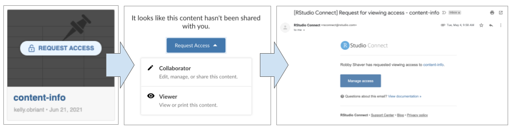

2021-07-29
As publishers add more content to RStudio Connect, content organization, distribution, and discovery can become a challenge. Distributing individual links to all your most important content is tiresome, and the default Connect dashboard contains more information than end users often want or need.
This release of RStudio Connect introduces tools for addressing these common content curation concerns:
How do you make sure your audience finds what they need on RStudio Connect without paging through the dashboard, remembering the right search terms, or bookmarking every content item you share?
After deploying many pieces of related content, how do you share them as a cohesive project?
You might be interested in these content curation tools if you’ve ever wanted to create:
We’ve seen some impressive solutions to these problems from our advanced user community, but our ultimate goal has been to make content curation and distribution easy for all RStudio Connect publishers. With this in mind, content curation for RStudio Connect is structured around the following design principles:
connectwidgetsconnectwidgets is an RStudio-maintained R package that can be used to query a Connect server for a subset of your existing content items, then organize them within htmlwidget components in an R Markdown document or Shiny application.
The package provides organization components for card, grid, and table views:
Visit the package documentation site for a full set of code examples.
connectwidgets components support styling in rmarkdown::html_document via the bslib package. You can supply a Bootswatch theme in the yaml header, or pass a custom theme consistent with your organization’s style.
Bootswatch theme example:
---
output:
html_document:
theme:
bootswatch: minty
---
To start using connectwidgets with your own RStudio Connect server content, you must first upgrade to 1.9.0.
Install connectwidgets from CRAN and load the library:
install.packages(‘connectwidgets’)
library(connectwidgets)Use the package template to learn about each of the components:
rmarkdown::draft("example-page.Rmd", template = "connectwidgets", package = "connectwidgets")Alternatively, follow the RStudio Connect Jump Start example directions, or code examples available on the package documentation site.
connectwidgets is an open source R package. We would love to hear your thoughts and feedback. Make a feature request by opening an issue on the package repository. Contribute code by submitting a pull request.
Introduced in RStudio Connect 1.8.8
By default, RStudio Connect will now automatically provision Server Address (CONNECT_SERVER) and an API Key (CONNECT_API_KEY), scoped to the publisher so that items are not published in a broken state.
If you’ve ever published content to RStudio Connect that relies on the presence of environment variables, you will know to expect errors on the initial deployment. Content items that make use of the new connectwidgets package will need two environment variables to run: API key, and server address. This feature isn’t only relevant for connectwidgets; any workflow that expects a publisher’s API key to be passed to the content runtime (e.g. updating a Pin, or pulling audit information from the RStudio Connect Server API), will benefit from this change.
CONNECT_SERVER and CONNECT_API_KEY are available across all content runtimes except TensorFlow.Introduced in RStudio Connect 1.8.8
Since connectwidgets components are rendered with the same permissions you have on the RStudio Connect server, viewers of your pages may discover content they don’t otherwise have access to. If a viewer follows a link to a content item they don’t have permission to view, they will be directed to request access.
The example below shows what a connectwidgets grid view content item looks like to someone who doesn’t have access permissions to view it. Note that the “preview image” for that content item has been replaced with the generic placeholder and a “Request Access” overlay. The access permissions dialog prompts the requesting user to select the level of access desired. In this example, the requesting user is a publisher, so they can choose either Collaborator or Viewer permissions. This triggers an email to be sent to the content owner and collaborators who can confirm or deny the request.

Two new configuration settings have been added to increase the customization options for emails sent by RStudio Connect through your email server:
Server.SenderEmailDisplayName setting has been added to allow customization of the server display name (alias) that is used when sending administrative emails.Server.EmailFromUserAddresses setting indicates that outbound email messages sent on behalf of your users should specify both the Sender and From addresses. When enabled, the From field of an email message uses the name and email address associated with the sending user. The Sender field will be populated with the value from the Server.SenderEmail configuration setting. This setting is disabled by default. Not all email servers support this feature.Learn more about these new configuration settings in the Admin Guide.
RunAs UsersRStudio Connect now allows server administrators to configure a shared Unix group via the Applications.SharedRunAsUnixGroup setting. If unset, the default is the primary Unix group of the Applications.RunAs user. Previously, the shared Unix group was not configurable and the primary group of the Applications.RunAs user was always used. All RunAs users must be members of this shared Unix group. Learn more about RunAs user process management in the Admin Guide.
The process listing on the Admin Metrics page of the RStudio Connect dashboard has been updated:
In order to increase the supportability of RStudio Connect installations, the following breaking changes have been introduced in this release:
Breaking Change RStudio Connect will not launch if the following configurable directories are located inside its installation directory (/opt/rstudio-connect by default): Server.DataDir, SQLite.Dir, Server.TempDir, Server.LandingDir, Database.Dir, Application.Pandoc1Dir, Application.Pandoc2Dir, Application.Pandoc211Dir. Connect will produce an error message that identifies any directories in violation of this condition. You will be directed to relocate the directory and update your configuration file. Review the Admin Guide for additional information.
Breaking Change RStudio Connect confirms at startup that a configured Applications.Supervisor script does not reside under certain protected directories, including Server.DataDir, Server.TempDir, SQLite.Dir, and /etc/rstudio-connect/. Connect will produce an error message if the configured supervisor script is detected in a protected directory. You will be directed to relocate the script and update your configuration file. Review the Admin Guide for additional information.
Please review the full release notes.
Upgrade Planning
Aside from the breaking changes listed above, there are no other special considerations, and upgrading should require less than five minutes. If you are upgrading from a version earlier than 1.8.8.2, be sure to consult the release notes for the intermediate releases, as well.
To perform an upgrade, download and run the installation script. The script installs a new version of RStudio Connect on top of the earlier one. Existing configuration settings are respected.
# Download the installation script
curl -Lo rsc-installer.sh https://cdn.rstudio.com/connect/installer/installer-v1.9.2.sh
# Run the installation script
sudo bash ./rsc-installer.sh 1.9.0